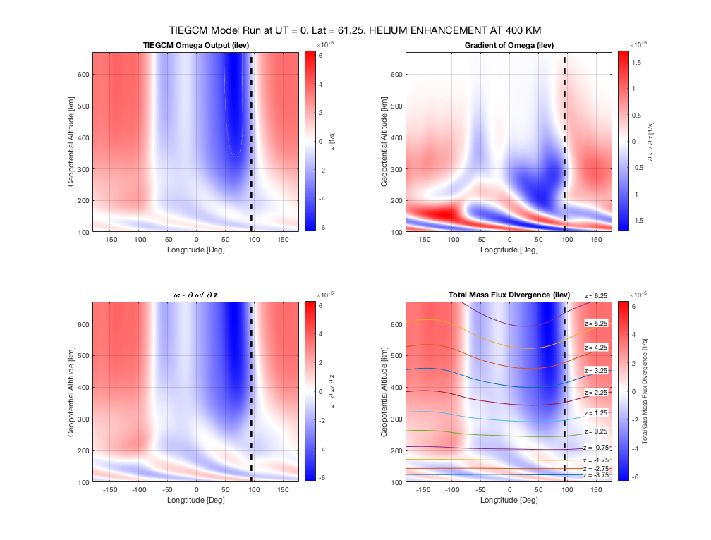

TIEGCM Continuity and Momentum Equation Analysis Program
The programs and functions used to evaluate the different terms in the momentum equation for the thermosphere. Written by Hannah Holt. Last Updated 9/4/2019
Contents
- -------------- MAIN ----------------------
- Define Program Characteristics
- Loading Viki's TIEGCM Simulation
- Initialize Objects
- Main Function Calls
- Plot Total Gas Features
- Plot Specific Species Behavior
- -------------- CLASSES ---------------------
- A 'TIEGCMspecies' object
- -------------- FUNCTIONS ------------------
- -- Diffusion Coefficient Calculation
- -- Horizontal Total Mass Flux Divergence Calculation
- -- Vertical Advection Calculation
- -- Scale Height Calculation
- -- Converting from lev to ilevs
-------------- MAIN ----------------------
Define Program Characteristics
close all; output = '~/TIEGCM/TIEGCM_files/'; FigFolder = './Figures/'; addpath(output, FigFolder); %---------------- ut_want = 1; % what time segment desired from simulation feat = 1; % Select latitude and longitude desired pdrag = 1; % 1 if pdrag file used, 0 if not res = 2.5; % ----- Global Features ------- if feat == 1 lon_want = 95; % North nighttime maximum feature lat_want = 61.25; savename = 'N_He_max'; plotname = 'HELIUM ENHANCEMENT AT 400 KM'; end if feat == 2 lon_want = 85; % South nighttime maximum feature lat_want = -58.75; savename = 'S_He_max'; plotname = 'HELIUM ENHANCEMENT AT 400 KM'; end if feat == 3 lon_want = -77.5; % North Daytime minimum feature lat_want = 18.75; savename = 'N_He_min'; plotname = 'HELIUM DEPLETION AT 400 KM'; end if feat == 4 lon_want = -77.5; % South Daytime minimum feature lat_want = -46.25; % true minimum is at -13.75 in the Southern hemi!! savename = 'S_He_min'; plotname = 'HELIUM DEPLETION AT 400 KM'; end
Loading Viki's TIEGCM Simulation
if pdrag == 1 filename = [output, 'HSUVW.tiegcm2.0_dres.pdrag_f107_180_001.nc']; id = 'pdrag'; end if pdrag == 0 filename = [output, 'HSUVW.tiegcm2.0_dres.nodragtest_ctrSS_f107_180_001.nc']; id = 'no Ion Drag'; end % Parse Data from file den = ncread(filename,'DEN') / 1e3; % total density [kg/m^3] ILEV zp = ncread(filename, 'Z') / 100; % geopotential height [m] on ILEV p0 = ncread(filename, 'p0_model') / 10; % p0 reference pressure used by model [Pascals] g0 = ncread(filename, 'grav') / 100; % const. gravitational acceleration [m/s] z_ilev = ncread(filename, 'ilev'); % interface pressure level Tn = ncread(filename,'TN'); % temperature on levs [K] lat = ncread(filename,'lat'); % latitude points lon = ncread(filename,'lon'); % longitude points [-180, 180] wn = ncread(filename,'WN')/100; % neutral vertical winds on ilev [m/s] % make a 144x57 matrix with each whole column being one of the pressure ilevs. % (i.e. rows are all the same for a given column) Z = repmat(z_ilev', size(den,1), 1 ); P = p0 .* exp(-Z); % pressure array on ilevs [Pa] altPts = length(z_ilev); lonPts = length(lon); he = ncread(filename,'HE'); % Units of mass mixing ratio n2 = ncread(filename,'N2'); o2 = ncread(filename,'O2'); o1 = ncread(filename,'O1'); % Condense to UT time and latitude i = find(lat == lat_want); den = squeeze(den(:, i, :, ut_want+1)); n2 = squeeze(n2(:, i , :, ut_want+1)); o2 = squeeze(o2(:, i, :, ut_want+1)); o1 = squeeze(o1(:, i, :, ut_want+1)); he = squeeze(he(:, i, :, ut_want+1)); zp = squeeze(zp(:, i, :, ut_want+1)); Tn = squeeze(Tn(:, i, :, ut_want+1)); wn = squeeze(wn(:, i, :, ut_want+1)); % put Temperature on ilevs Tn = CONVERT2ILEV(Tn, lonPts, altPts);
Initialize Objects
N2 = TIEGCMspecies('N2', 28.01, n2, den, Z); O2 = TIEGCMspecies('O2', 32, o2, den, Z); O1 = TIEGCMspecies('O1', 16, o1, den, Z); He = TIEGCMspecies('He', 4, he, den, Z);
Main Function Calls
Diffusion Coefficients for each species
DiffCoeff(Tn, P, N2, O2, O1, He) % Thermal diffusion coefficient D_Ti = -0.36 * He.Di; % mean molecular mass on ilevs [kg/mol] mbar = (N2.mmr/N2.weight + O2.mmr/O2.weight + O1.mmr/O1.weight + He.mmr/He.weight).^-1; % Scale Heights for each species and for general atm. [H_P, H_T, H_T_He, H_rho_diff, H_rho_star] = ScaleHeight(N2, O2, O1, He, Tn, mbar, zp, den, g0, Av, kb); % Omega "winds" and needed gradients omega = wn./H_P; % TIEGCM omega for every lon/alt [1/s] omegaGrad = zeros(size(omega)); % gradient of omega w.r.t Z omegaExpGrad = omegaGrad; % gradient of omega * exp(-Z) w.r.t Z for l = 1:lonPts omegaGrad(l,:) = ThreePtGrad( Z(l,:), omega(l,:) ); omegaExpGrad(l,:) = ThreePtGrad( Z(l,:), exp(-Z(l,:)) .* omega(l,:) ); end % Vertical Advection Terms and assign to Objects VertAdvection(omega, Z, p0, g0, N2, O2, O1, He) % Horizontal Mass Flux Divergence Terms for objecta and total gas Tot_Mdiv = HorMassFluxDivergence(omegaExpGrad, Z, p0, g0, N2, O2, O1, He);
Plot Total Gas Features
x_label = 'Longitude'; saveFig = '0'; PLOT_TotalGas(res, x_label, zp, z_ilev, lon, lon_want, lat_want, omega, omegaGrad, Tot_Mdiv, plotname, saveFig)
Plot Specific Species Behavior
saveFig = savename;
saveFig = '0';
PLOT_Species(res, x_label, zp, z_ilev, lon, lon_want, lat_want, omega, plotname, saveFig, He)
-------------- CLASSES ---------------------
A 'TIEGCMspecies' object
classdef TIEGCMspecies < handle % Class definition for each species of the TIEGCM output. All units are % SI, i.e. [kg, m, s] properties (Constant) ATOM_UNIT = 1.6605e-27; % [kg/amu] end properties (SetAccess = immutable) % Can only set in Constructor slcPts % slice pts can either be lat or lon altPts name weight mass mmr mmrGrad n rho end properties (SetAccess = private) Hp H_diff H_star H_percent Di Vert_Adv Hor_MDiv end methods % ---- CONSTRUCTOR ------ function obj = TIEGCMspecies(name, amu, MMR, Den, Z) sizeofObj = size(MMR); obj.altPts = sizeofObj(end); obj.slcPts = sizeofObj(1:end-1); % takes into account if MMR is 2D or 3D obj.name = name; % name of atom [string] obj.weight = amu/1000; % weight of atom [kg/mol] obj.mass = amu * obj.ATOM_UNIT; % atomic mass of species [kg] obj.mmr = CONVERT2ILEV(MMR, obj.slcPts, obj.altPts); % mass mixing ratio on ilevs % Number density [1/m^3] on ilevs obj.n = obj.mmr .* Den; % Mass density [kg/m^3] on ilevs obj.rho = obj.mmr .* Den; % MMR gradient w.r.t pressure coord Z = ln(p/p0) for every if length(obj.slcPts) == 1 for l = 1:obj.slcPts obj.mmrGrad(l,:) = ThreePtGrad(Z(l,:), obj.mmr(l,:)); end else % we have a 3D matrix for lon = 1:obj.slcPts(1) for lat = 1:obj.slcPts(2) obj.mmrGrad(lon,lat,:) = ThreePtGrad(Z(lon,lat,:), obj.mmr(lon,lat,:)); end end end end % ---- Change The Scale Heights ------ % NOTE - ONLY DESIGNED FOR 2D object function obj = setScaleHeights(obj, Hp, H_diff, H_star) test = [size(Hp); size(H_diff); size(H_star)]; matrx = [obj.slcPts, obj.altPts]; if (test(1,:) ~= matrx) | (test(2,:) ~= matrx) | (test(3,:) ~= matrx) error("Scale height matrix has wrong size."); else % Initialize the scale heights obj.Hp = Hp; obj.H_diff = H_diff; obj.H_star = H_star; % Calculate Percents Difference from Diffusive Eq. obj.H_percent = ((obj.H_star ./ obj.H_diff) - 1) * 100; end end % set the molecular Diffusion Coefficient function obj = setD(obj, Di) if size(Di) ~= [obj.slcPts, obj.altPts] error("Diffusion Coefficient Error: Wrong Dimensions"); else obj.Di = Di; end end % set the vertical advection term function obj = setVertAdvec(obj, Vert_Adv) if size(Vert_Adv) ~= [obj.slcPts, obj.altPts] error("Vertical Advection Error: Wrong Dimensions"); else obj.Vert_Adv = Vert_Adv; end end % set the horizontal divergence term function obj = setHorMassFluxDiv(obj, Hor_MDiv) if size(Hor_MDiv) ~= [obj.slcPts, obj.altPts] error("Horizontal Divergence Error: Wrong Dimensions"); else obj.Hor_MDiv = Hor_MDiv; end end end end
-------------- FUNCTIONS ------------------
-- Diffusion Coefficient Calculation
function [] = DiffCoeff(T, P, N2, O2, O1, He) % set all the molecular diffusion coefficients N2.setD( Di_TIEGCM('N2', T, P) ); % [m^2/s] O2.setD( Di_TIEGCM('O2', T, P) ); O1.setD( Di_TIEGCM('O1', T, P) ); He.setD( Di_TIEGCM('He', T, P) ); end
function [D_i] = Di_TIEGCM(species, T, p) % Calculates the molecular diffusion coefficient using TIEGCM values % T = input array of tempurates [K] vs. altitude at specific lat, lon, and UT % P = input array of pressures [Pa] vs. altitude at specific lat, lon, and UT % D_i = output array of species diffusion coefficient in [m^2/s] T0 = 273; % reference Temp [K] p0 = 1E5; % reference pressure [Pa] switch species case 'N2' % [O2-N2, O-N2, He-N2] a = [0.18; 0.26; 0.612661]; %[cm^2/s] s = [1.75; 1.75; 1.718]; case 'O2' % [O2-N2, O2-O, O2-He] a = [0.18; 0.26; 0.648966]; s = [1.75; 1.75; 1.71]; case 'O1' % [O-N2, O-O2, O-He] a = [0.26; 0.26; 0.865538]; s = [1.75; 1.75; 1.749]; case 'He' % [He-N2, He-O2, He-O] a = [0.621661; 0.648966; 0.865539]; s = [1.718; 1.710; 1.749]; end D_i = 0; for i=1:3 D_i = D_i + ( a(i) .* (T./T0).^s(i) .* (p0./p) ) ./ 1E4; % [m^2/s] end end
-- Horizontal Total Mass Flux Divergence Calculation
function [Tot_MDiv] = HorMassFluxDivergence(omegaExpGrad, Z, p0, g0, varargin) % Sets the horizontal mass flux divergence terms for each object and % returns the mass flux divergence for the total gas [] val = -p0 / g0 .* omegaExpGrad; % number of species objects given for i = 1:length(varargin) Obj = varargin{1,i}; Obj.setHorMassFluxDiv(val .* Obj.mmr); end Tot_MDiv = -exp(Z) .* omegaExpGrad; end
-- Vertical Advection Calculation
function [] = VertAdvection(omega, Z, p0, g0, varargin) % Sets the vertical advection terms for each object val = p0 / g0 .* exp(-Z) .* omega; % number of species objects given for i = 1:length(varargin) Obj = varargin{1,i}; Obj.setVertAdvec(val .* Obj.mmrGrad); end end
-- Scale Height Calculation
function [H_P, H_T, H_T_He, H_rho_diff, H_rho_star] = ScaleHeight(N2, O2, O1, He, tn, mbar, zp, den, g0, Av, kb) %-----Finding Pressure Scale Heights for gas constituents from kT/mg----- H_P = kb * tn ./ (mbar/Av .* g0); % mean pressure scale height [m] Hp_n2 = kb * tn ./ (N2.mass * g0); % N2 press. scale height [m] Hp_o2 = kb * tn ./ (O2.mass * g0); % O2 press. scale height [m] Hp_o1 = kb * tn ./ (O1.mass * g0); % O1 press. scale height [m] Hp_he = kb * tn ./ (He.mass * g0); % He press. scale height [m] % Calculate Scale Heights Using 3pt Differentiation Technique points = zeros(size(tn)); H_he = points; H_n2 = points; H_o1 = points; H_o2 = points; H_T = points; H_mass = points; H_rho_star = points; % ----- 2 Dimensional 3 Point Gradient ------- for l = 1:N2.slcPts for z = 1:N2.altPts if z == 1 % First Point gradient technique coeff1 = (2*zp(l,1)-zp(l,2)-zp(l,3))/((zp(l,1)-... zp(l,2))*(zp(l,1)-zp(l,3))); coeff2 = (2*zp(l,1)-zp(l,1)-zp(l,3))/((zp(l,2)-... zp(l,1))*(zp(l,2)-zp(l,3))); coeff3 = (2*zp(l,1)-zp(l,1)-zp(l,2))/((zp(l,3)-... zp(l,1))*(zp(l,3)-zp(l,2))); H_he(l,1) = -1/He.rho(l,1)*(He.rho(l,1)*coeff1+He.rho(l,2)*coeff2+... He.rho(l,3)*coeff3); H_rho_star(l,1) = -1/den(l,1)*(den(l,1)*coeff1+den(l,2)*coeff2+... den(l,3)*coeff3); H_n2(l,1) = -1/N2.rho(l,1)*(N2.rho(l,1)*coeff1+N2.rho(l,2)*coeff2+... N2.rho(l,3)*coeff3); H_o1(l,1) = -1/O1.rho(l,1)*(O1.rho(l,1)*coeff1+O1.rho(l,2)*coeff2+... O1.rho(l,3)*coeff3); H_o2(l,1) = -1/O2.rho(l,1)*(O2.rho(l,1)*coeff1+O2.rho(l,2)*coeff2+... O2.rho(l,3)*coeff3); H_T(l,1) = 1/tn(l,1)*(tn(l,1)*coeff1+tn(l,2)*coeff2+... tn(l,3)*coeff3); H_mass(l,1) = -1/mbar(l,1)*(mbar(l,1)*coeff1+mbar(l,2)*coeff2+... mbar(l,3)*coeff3); elseif z == N2.altPts %Last point gradient technique coeff1 = (2*zp(l,z)-zp(l,z-1)-zp(l,z))/((zp(l,z-2)-... zp(l,z-1))*(zp(l,z-2)-zp(l,z))); coeff2 = (2*zp(l,z)-zp(l,z-2)-zp(l,z))/((zp(l,z-1)-... zp(l,z-2))*(zp(l,z-1)-zp(l,z))); coeff3 = (2*zp(l,z)-zp(l,z-2)-zp(l,z-1))/((zp(l,z)-... zp(l,z-2))*(zp(l,z)-zp(l,z-1))); H_he(l,z) = -1/He.rho(l,z)*(He.rho(l,z-2)*coeff1+He.rho(l,z-1)*coeff2+... He.rho(l,z)*coeff3); H_rho_star(l,z) = -1/den(l,z)*(den(l,z-2)*coeff1+den(l,z-1)*coeff2+... den(l,z)*coeff3); H_n2(l,z) = -1/N2.rho(l,z)*(N2.rho(l,z-2)*coeff1+N2.rho(l,z-1)*coeff2+... N2.rho(l,z)*coeff3); H_o1(l,z) = -1/O1.rho(l,z)*(O1.rho(l,z-2)*coeff1+O1.rho(l,z-1)*coeff2+... O1.rho(l,z)*coeff3); H_o2(l,z) = -1/O2.rho(l,z)*(O2.rho(l,z-2)*coeff1+O2.rho(l,z-1)*coeff2+... O2.rho(l,z)*coeff3); H_T(l,z) = 1/tn(l,z)*(tn(l,z-2)*coeff1+tn(l,z-1)*coeff2+... tn(l,z)*coeff3); H_mass(l,z) = -1/mbar(l,z)*(mbar(l,z-2)*coeff1+mbar(l,z-1)*coeff2+... mbar(l,z)*coeff3); else % Middle Points gradient technique coeff1 = (2*zp(l,z)-zp(l,z)-zp(l,z+1))/((zp(l,z-1)-... zp(l,z))*(zp(l,z-1)-zp(l,z+1))); coeff2 = (2*zp(l,z)-zp(l,z-1)-zp(l,z+1))/((zp(l,z)-... zp(l,z-1))*(zp(l,z)-zp(l,z+1))); coeff3 = (2*zp(l,z)-zp(l,z-1)-zp(l,z))/((zp(l,z+1)-... zp(l,z-1))*(zp(l,z+1)-zp(l,z))); H_he(l,z) = -1/He.rho(l,z)*(He.rho(l,z-1)*coeff1+He.rho(l,z)*coeff2+... He.rho(l,z+1)*coeff3); H_rho_star(l,z) = -1/den(l,z)*(den(l,z-1)*coeff1+den(l,z)*coeff2+... den(l,z+1)*coeff3); H_n2(l,z) = -1/N2.rho(l,z)*(N2.rho(l,z-1)*coeff1+N2.rho(l,z)*coeff2+... N2.rho(l,z+1)*coeff3); H_o1(l,z) = -1/O1.rho(l,z)*(O1.rho(l,z-1)*coeff1+O1.rho(l,z)*coeff2+... O1.rho(l,z+1)*coeff3); H_o2(l,z) = -1/O2.rho(l,z)*(O2.rho(l,z-1)*coeff1+O2.rho(l,z)*coeff2+... O2.rho(l,z+1)*coeff3); H_T(l,z) = 1/tn(l,z)*(tn(l,z-1)*coeff1+tn(l,z)*coeff2+... tn(l,z+1)*coeff3); H_mass(l,z) = -1/mbar(l,z)*(mbar(l,z-1)*coeff1+mbar(l,z)*coeff2+... mbar(l,z+1)*coeff3); end end end %-----Get Scale Height from Inverse----- H_N2_star = 1./H_n2; H_O2_star = 1./H_o2; H_O1_star = 1./H_o1; H_He_star = 1./H_he; H_T = 1./H_T; H_T_He = H_T/.62; % <---- Alpha for helium is -.38 H_m = 1./H_mass; H_rho_diff = (1./H_T + 1./H_P + 1./H_m).^-1; % Atmospheric diffusive density scale height H_rho_star = 1./H_rho_star; %----Put Together Diffusive Profiles and Mean Mass Profile----- H_N2_diff = (1./H_T + 1./Hp_n2).^-1; % N2 Diffusive profile H_O2_diff = (1./H_T + 1./Hp_o2).^-1; % O2 diffusie profile H_O1_diff = (1./H_T + 1./Hp_o1).^-1; % O1 Diffusive profile H_He_diff = (1./H_T_He + 1./Hp_he).^-1; % Helium diffusive profile % Set all the object scale heights and return general values to main N2.setScaleHeights(Hp_n2, H_N2_diff, H_N2_star); O2.setScaleHeights(Hp_o2, H_O2_diff, H_O2_star); O1.setScaleHeights(Hp_o1, H_O1_diff, H_O1_star); He.setScaleHeights(Hp_he, H_He_diff, H_He_star); end
-- Converting from lev to ilevs
File '~/Documents/MATLAB/ASEN5307/Utilities/CONVERT2ILEV.m' not found.
Hannah Holt CU BOULDER Aerospace Engineering Sciences. Thank you.